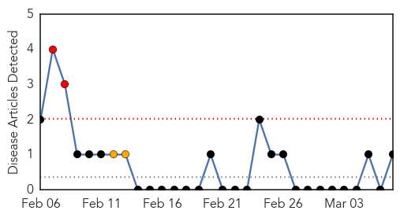
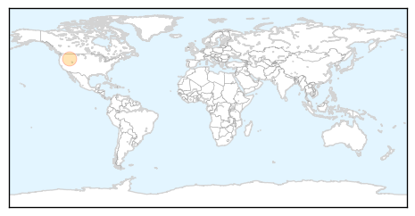

Pertussis
30-Day Web Trend
2 alerts, 2 warnings

30-Day Twitter Trend
0 alerts, 0 warnings

Article Locations
Article Confidences

Top Articles:
Top Tweets:
-
No tweets found for Mar 07, 2014
Influenza
30-Day Web Trend
0 alerts, 0 warnings
30-Day Twitter Trend
1 alerts, 0 warnings

Article Locations

Article Confidences
Top Articles:
Top Tweets:
- 0.702
- Decrease in proportion of sentinel specimens positive for influenza virus for 6th consecutive week. Read more: http://t.co/ifdKKT0rBP
- 0.526
- Flu Fact Friday: New nanotechnology is thought to be able to combat influenza and other viruses.